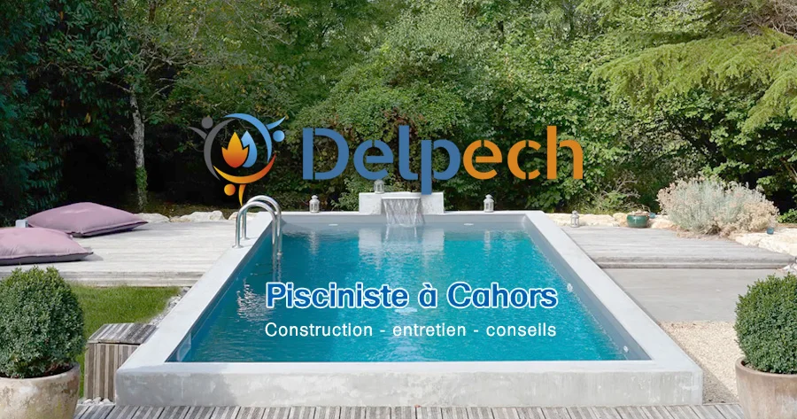
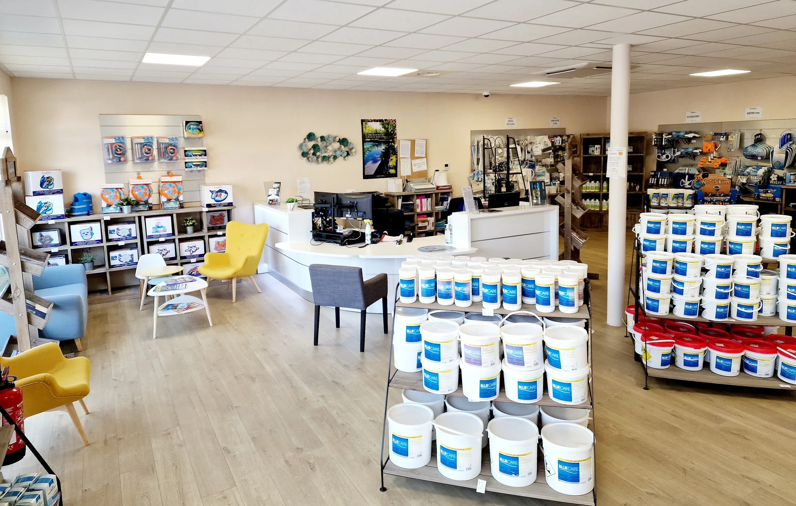
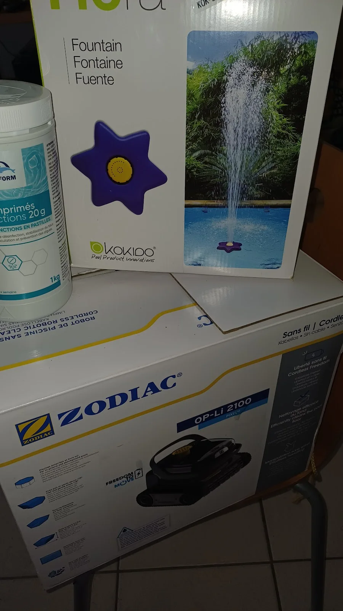

Piscine sur mesure
De l’étude du projet à la mise en eau, avec une construction en maçonnerie traditionnelle et une configuration pensée pour votre terrain.
Voir les étapes →Construction sur mesure, rénovation, entretien et équipements : Delpech Piscines vous accompagne de l’idée au premier plongeon, puis dans la durée.
4.7 ★★★★★4,7/5 sur Google65 avis clientsLe site historique présente neuf univers de piscines. Nous les remettons ici au centre, dans une galerie plus visuelle qui permet d’imaginer immédiatement un projet adapté à votre maison, votre terrain et votre mode de vie.




Un seul univers de services autour du bassin : construire, faire évoluer, protéger, équiper et entretenir votre piscine selon vos besoins.
De l’étude du projet à la mise en eau, avec une construction en maçonnerie traditionnelle et une configuration pensée pour votre terrain.
Voir les étapes →Faire évoluer un bassin existant, son esthétique, ses équipements ou son environnement pour retrouver confort et cohérence.
Découvrir →Des interventions à la carte ou des formules adaptées pour garder une eau propre et des équipements suivis au fil des saisons.
Nos prestations →Filtration, chauffage, traitement, robotisation et équipements de confort : des solutions sélectionnées en fonction du bassin.
Voir les équipements →Volets, couvertures, abris et autres dispositifs pour sécuriser l’accès à la piscine et simplifier son usage au quotidien.
En savoir plus →À Cahors, le magasin Delpech Piscines propose produits, accessoires, conseil et analyse d’eau, avec ou sans rendez-vous.
Infos magasin →

Installée à Cahors depuis 1966, l’entreprise familiale Delpech a développé son pôle piscine en s’appuyant sur le réseau Carré Bleu et sur une approche entièrement personnalisée du bassin.
Le magasin complète cet accompagnement : disponibilité des produits toute l’année, analyse d’eau et espace conseil avec ou sans rendez-vous. Le site historique cite notamment Pierre et Stéphanie comme interlocuteurs au magasin.
La construction suit une progression lisible : étude, gros œuvre, installation du bassin et de ses équipements, sécurité, réception et prise en main.
Dimensions, implantation, usage et contraintes du terrain.
Excavation, maçonnerie et réseaux hydrauliques.
Local technique, étanchéité, revêtements et mise en eau.
Mise en place des fermetures et dispositifs retenus.
Contrôle, explications et prise en main du bassin.
Une sélection de projets et de photos issus des contenus Delpech : maisons contemporaines, jardins du Lot, bassins miroir et piscines familiales.
5 avis récents issus de la fiche Google Business de Delpech Piscines.
« Une équipe de professionnels qui connaissent leur job. Des conseils éclairés, avisés et des gens honnêtes. Rare à Cahors. Je recommande cette équipe pour leur savoir faire et encore mieux, leur savoir être. »
« Je tiens à exprimer ma reconnaissance pour votre réactivité, votre écoute, votre professionnalisme et votre bienveillance. Il est exceptionnel de rencontrer un service client aussi attentif et efficace. »
« Ne cherchez plus où faire entretenir votre piscine. Ils sont extra ! Pour l’entretien : ils sont d’une efficacité redoutable. Ils ouvrent, entretiennent et hivernent la piscine. »
« Je tiens à faire part de mon entière satisfaction concernant le remplacement d'une vanne 6 voies de mon installation. Je remercie les deux collaborateurs pour leur professionnalisme, leur efficacité et leur sympathie. »
« Après avoir consulté différentes entreprises, nous avons confié à la société Delpech la réalisation de notre piscine. Toute l'équipe est professionnelle et à l'écoute. Le chantier, depuis le devis jusqu'à l'échéance, s'est très bien déroulé. »
Les réponses utiles pour préparer un premier échange avec l’équipe Delpech Piscines.
Delpech Piscines présente des projets sur mesure très variés : piscines traditionnelles, paysages, miroir, à débordement, couloirs de nage, petites piscines, piscines intérieures, piscines en verre et espaces spa. L’objectif est d’adapter le projet à votre espace, vos usages et votre environnement.
Le parcours présenté par Delpech commence par l’étude et l’implantation, puis les travaux de gros œuvre et les réseaux hydrauliques. Viennent ensuite le local technique, l’étanchéité, les revêtements, la mise en eau, les équipements de sécurité et enfin la réception avec la prise en main du bassin.
Oui. Les prestations décrites comprennent notamment l’ouverture, l’entretien courant et l’hivernage. Elles peuvent inclure l’analyse et le traitement de l’eau, le nettoyage du bassin, le contrôle de l’installation et la remise en service ou la purge selon la saison.
Oui. Le magasin Delpech Piscines à Cahors indique proposer une analyse d’eau et un espace conseil, avec ou sans rendez-vous. C’est aussi un point de vente pour les produits et accessoires d’entretien.
Oui. L’activité couvre la rénovation, le dépannage, la réparation et la maintenance des bassins existants. Pour une demande précise, le plus simple est de décrire le problème ou l’évolution souhaitée à l’équipe afin qu’elle puisse orienter le diagnostic.
Vous pouvez appeler directement le 05 65 22 05 18, envoyer un email à carrebleu@ets-delpech.fr ou venir au 92 chemin de Belle Croix à Cahors. Préparez si possible quelques informations sur le terrain, le bassin souhaité ou l’installation existante afin de faciliter le premier échange.
Construction, rénovation ou entretien : échangez directement avec l’équipe de Cahors pour préciser votre besoin et les prochaines étapes.